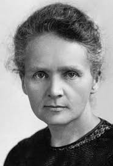
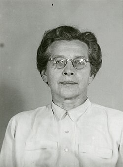
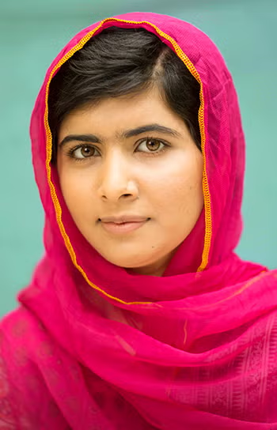

Marie Curie

Vědkyně, která získala dvě Nobelovy ceny za výzkum radioaktivity.
Mezinárodní den žen se slaví 8. března a připomíná boj žen za rovnoprávnost, spravedlnost a lidská práva.
MDŽ vznikl na začátku 20. století jako součást boje žen za volební právo a lepší pracovní podmínky.
„Nemůžeme uspět, pokud polovina z nás zůstává pozadu.“
Dnes je MDŽ příležitostí vyjádřit úctu ženám a podporovat rovnost ve společnosti.
| Období | Hlavní téma | Způsob oslavy |
|---|---|---|
| Dříve | Volební právo a pracovní podmínky | Demonstrace a protesty |
| Dnes | Rovné příležitosti a vzdělání | Společenské a vzdělávací akce |

Vědkyně, která získala dvě Nobelovy ceny za výzkum radioaktivity.

Česká politička a bojovnice za práva žen, popravená komunistickým režimem.

Aktivistka za vzdělávání dívek a nejmladší nositelka Nobelovy ceny míru.